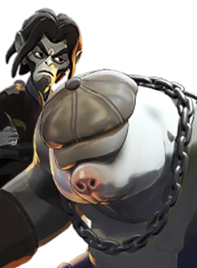

Dano contínuo, ótimo para quem está começando.
História
Como a maioria dos adolescentes; Inferno era selvagem, rebelde e impetuoso. Ao contrário da maioria dos adolescentes, Infernus era uma criatura de outro plano e tinha domínio sobrenatural sobre o fogo. Escusado será dizer que sua juventude foi repleta de incêndios criminosos, assassinatos e eliminação de evidências. Mas isso foi então. Agora adulto, Infernus suavizou consideravelmente. Ele está feliz trabalhando em um bar com boa música ao vivo e conversando com pessoas interessantes. Dito isto, quando alguém no bar se torna beligerante ou violento, ele não tem medo de tirar a poeira das habilidades que uma vez aprimorou.
História oficial do jogo, traduzida automaticamente para o português.
Números reais
Habilidades
Cospe uma mistura incendiária que causa dano espiritual, retarda alvos e os cobre de napalm.
Avança com resistência a lentidão deixando um rastro de fogo que causa dano espiritual contínuo.
Acertos de arma acumulam uma queimadura que causa dano espiritual contínuo.
Após um breve atraso, detona causando dano espiritual e atordoando inimigos próximos.
Builds mais usadas
13.241 partidas registradas com esta build.
Rodadas rápidas (800) · Espírito Melhorado (1.600) · Revista Estendida (800) · Atacante Rápido (1.600) · Revista Titânico (1.600) · Healbane (1.600) · Roubo de Vida Espiritual (1.600) · Extensor de duração (1.600) · Vulnerabilidade Mística (1.600) · Velocidade duradoura (1.600)
10.707 partidas registradas com esta build.
Espírito Extra (800) · Rodadas rápidas (800) · Espírito Melhorado (1.600) · Revista Estendida (800) · Atacante Rápido (1.600) · Healbane (1.600) · Revista Titânico (1.600) · Roubo de Vida Espiritual (1.600) · Extensor de duração (1.600) · Vulnerabilidade Mística (1.600)
8.809 partidas registradas com esta build.
Espírito Melhorado (1.600) · Rodadas rápidas (800) · Revista Estendida (800) · Saúde Extra (800) · Atacante Rápido (1.600) · Revista Titânico (1.600) · Recarga rápida (3.200) · Regeneração Extra (800) · Rito de Cura (800) · Grão (800)
Confrontos reais
 Shiv — 54.4% de vitória
Shiv — 54.4% de vitória Mirage — 53.7% de vitória
Mirage — 53.7% de vitória Warden — 53.6% de vitória
Warden — 53.6% de vitória Pocket — 53.5% de vitória
Pocket — 53.5% de vitória Sinclair — 53.5% de vitória
Sinclair — 53.5% de vitória Deadman Danny — 53.1% de vitória
Deadman Danny — 53.1% de vitória
 Rat King — 41.9% de vitória
Rat King — 41.9% de vitória Graves — 42.1% de vitória
Graves — 42.1% de vitória Paige — 42.7% de vitória
Paige — 42.7% de vitória Haze — 44.9% de vitória
Haze — 44.9% de vitória Victor — 45.4% de vitória
Victor — 45.4% de vitória Seven — 45.5% de vitória
Seven — 45.5% de vitória
O que upar primeiro
Nível por nível, na ordem que os jogadores mais usam em partidas de verdade. A porcentagem mostra quantos escolheram aquela habilidade naquele nível.
Melhores duplas
Heróis que mais ganham jogando junto com ele, em partidas reais (pelo menos 1.500 partidas juntos).
- Rat King56,3%
- Paige55,9%
- Graves55,8%
- Seven53,8%
 Kelvin53,1%
Kelvin53,1%
- Shiv41,8%
- Pocket42,7%
- Mirage43,7%
Rota (lane)
Na rota, cada lado joga em dupla. Estes números são de confrontos reais: a diferença de almas é medida com o jogo já começado, então almas no verde significa que ele costuma estar na frente.
- Graves — 41,3% de vitória +404 almas (1.464 partidas)
- Rat King — 41,6% de vitória +36 almas (7.626 partidas)
 Apollo — 42,3% de vitória −429 almas (163 partidas)
Apollo — 42,3% de vitória −429 almas (163 partidas)- Paige — 43,6% de vitória +150 almas (4.536 partidas)
- Haze — 44,4% de vitória −95 almas (9.319 partidas)
 Baba — 45,3% de vitória +571 almas (1.837 partidas)
Baba — 45,3% de vitória +571 almas (1.837 partidas) Yamato — 45,7% de vitória −33 almas (718 partidas)
Yamato — 45,7% de vitória −33 almas (718 partidas)- Seven — 46,4% de vitória +313 almas (2.259 partidas)
- Shiv — 55,0% de vitória +500 almas (1.196 partidas)
 Rem — 54,9% de vitória +347 almas (2.592 partidas)
Rem — 54,9% de vitória +347 almas (2.592 partidas)
Mo & Krill — 52,6% de vitória −304 almas (741 partidas)
Histórico de win rate
14/09: 51.9% → 02/11: 49.8% → 21/12: 49.2% → 08/02: 49.0% → 29/03: 54.0% → 17/05: 48.2% → 05/07: 49.2% → 23/08: 49.4% → 11/10: 49.0%